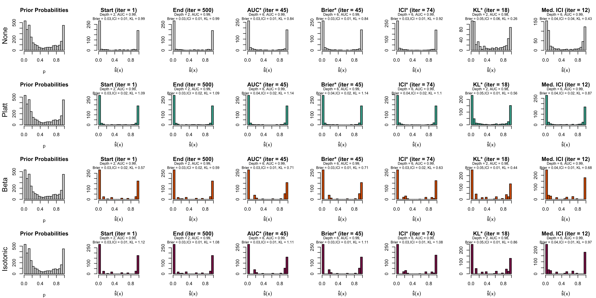

for (name in datasets$name) {# The Prior on the distribution of the scoresload(str_c("../output/real-data/priors_", name, ".rda"))}
The results:
files <-str_c("../output/real-data/xgb_resul_", datasets$name, ".rda")# Loop through each file and load it with a new namewalk2(files, datasets$name, ~{ loaded_object_name <-load(.x) new_name <-str_c("xgb_resul_", .y)assign(new_name, get(loaded_object_name), envir = .GlobalEnv)})
Figure 10.10: Distribution of scores on the test set (spambase)

10.3 Estimated Metrics
10.4 Before vs. After Recalibration
Let us have a look at the evolution of ICI and KL divergence before and after calibration with both methods (Platt-scaling and Isotonic regression). We consider three models for each dataset: the one for which the hyperparameters were selected based on the maximization of AUC (AUC*), the one for which the hyperparameters were selected based on the minimization of the Kullback-Leibler divergence between the distribution of the estimated scores and that of the prior distribution, and one with a relatively high ICI, i.e., with poor calibration.
Functions to extract the metrics from the results
#' Function to extract the results for models of interestgather_metrics <-function(xgb_resul) { metrics_xgb_all <- xgb_resul$metrics_simul |>mutate(sample =factor( sample,levels =c("train", "valid", "calib", "test"),labels =c("Train","Validation", "Calibration" ,"Test") ),recalib =factor( recalib,levels =c("none", "platt", "isotonic"),labels =c("None", "Platt", "Isotonic") ) )# Identify the smallest tree on the validation set, when the scores are not# recalibrated smallest_xgb <- metrics_xgb_all |>filter(sample =="Validation", recalib =="None") |>arrange(nb_iter) |>slice_head(n =1) |>select(ind, nb_iter, recalib) |>mutate(result_type ="smallest")# Identify the largest tree largest_xgb <- metrics_xgb_all |>filter(sample =="Validation", recalib =="None") |>arrange(desc(nb_iter)) |>slice_head(n =1) |>select(ind, nb_iter, recalib) |>mutate(result_type ="largest")# Identify tree with highest AUC on test set highest_auc_xgb <- metrics_xgb_all |>filter(sample =="Validation", recalib =="None") |>arrange(desc(AUC)) |>slice_head(n =1) |>select(ind, nb_iter, recalib) |>mutate(result_type ="largest_auc")# Identify tree with lowest brier lowest_brier_xgb <- metrics_xgb_all |>filter(sample =="Validation", recalib =="None") |>arrange(brier) |>slice_head(n =1) |>select(ind, nb_iter, recalib) |>mutate(result_type ="lowest_brier")# Identify tree with lowest ICI lowest_ici_xgb <- metrics_xgb_all |>filter(sample =="Validation", recalib =="None") |>arrange(ici) |>slice_head(n =1) |>select(ind, nb_iter, recalib) |>mutate(result_type ="lowest_ici")# Identify tree with lowest KL lowest_kl_xgb <- metrics_xgb_all |>filter(sample =="Validation", recalib =="None") |>arrange(KL_20_true_probas) |>slice_head(n =1) |>select(ind, nb_iter, recalib) |>mutate(result_type ="lowest_kl") mediocre_ici_xgb <- metrics_xgb_all |>filter(sample =="Validation", recalib =="None") |>arrange(desc(ici)) |>#slice_head(n = 1) |>filter(nb_iter ==10& ind ==1) |>select(ind, nb_iter, recalib) |>mutate(result_type ="mediocre_ici")# Merge these models_of_interest_xgb <- smallest_xgb |>bind_rows(largest_xgb) |>bind_rows(highest_auc_xgb) |>bind_rows(lowest_brier_xgb) |>bind_rows(lowest_ici_xgb) |>bind_rows(lowest_kl_xgb) |>bind_rows(mediocre_ici_xgb) models_of_interest_metrics <-NULLfor (recalibration_method inc("None", "Platt", "Isotonic")) {# Add metrics now models_of_interest_metrics <- models_of_interest_metrics |>bind_rows( models_of_interest_xgb |>select(-recalib) |>left_join( metrics_xgb_all |>filter( recalib == recalibration_method, sample %in%c("Validation", "Test") ),by =c("ind", "nb_iter"),relationship ="many-to-many"# (calib, test) ) ) } models_of_interest_metrics <- models_of_interest_metrics |>mutate(result_type =factor( result_type,levels =c("smallest", "largest", "lowest_mse", "largest_auc","lowest_brier", "lowest_ici", "lowest_kl", "mediocre_ici"),labels =c("Smallest", "Largest", "MSE*", "AUC*","Brier*", "ICI*", "KL*", "High ICI" ) ) ) models_of_interest_metrics}#' Function to format results for selected models for later use in ggplot2get_data_plot_before_after_recalib <-function(xgb_resul, dataset_name) { models_of_interest_metrics <-gather_metrics(xgb_resul = xgb_resul) table_models_interest <- models_of_interest_metrics |>filter(sample =="Test") |>select( recalib, sample, result_type, brier, ici, kl = KL_20_true_probas ) |>filter( result_type %in%c("AUC*", "KL*", "High ICI") ) |>mutate(dataset = dataset_name) initial_points <- table_models_interest |>filter(recalib =="None") |>mutate(dataset = dataset_name) points_after_c <- initial_points |>select(result_type, ici, kl) |>left_join( table_models_interest |>filter(recalib %in%c("Platt", "Isotonic")) |>select(recalib, result_type, ici, kl) |>rename(ici_end = ici, kl_end = kl),by ="result_type",relationship ="many-to-many"# (Platt and Isotonic) ) |>mutate(dataset = dataset_name)list(table_models_interest = table_models_interest,initial_points = initial_points,points_after_c = points_after_c )}# The models of interest for all datasetsdata_plot_before_after <-map2(.x =str_c("xgb_resul_", datasets$name), .y = datasets$name, .f =~get_data_plot_before_after_recalib(xgb_resul =get(.x), dataset_name = .y))# The metrics for these modelstable_models_interest <-map(data_plot_before_after, "table_models_interest") |>list_rbind()# The metrics for the three models of interest in the subsequent plot# before recalibrationinitial_points <-map(data_plot_before_after, "initial_points") |>list_rbind()# and after recalibrationpoints_after_c <-map(data_plot_before_after, "points_after_c") |>list_rbind()